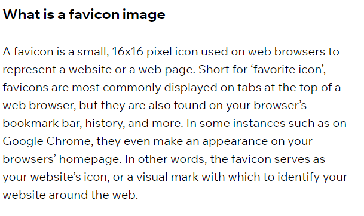

Lab_8 | Favicon Icon Hungchia Tsao
What exactly is a favicon?

How are favions created?
How to add favion to your Website with HTML
source
how to add favicon
how are favions created
what is a favicon